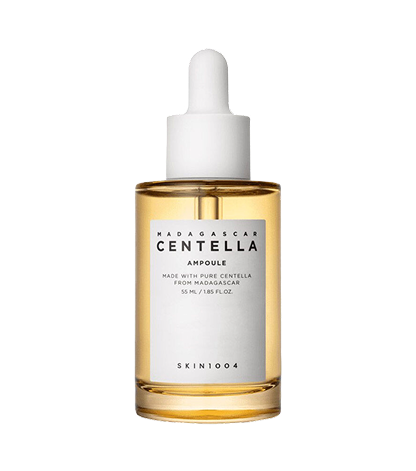
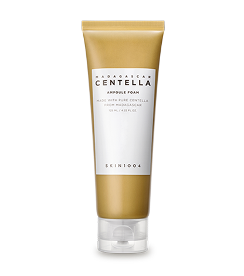
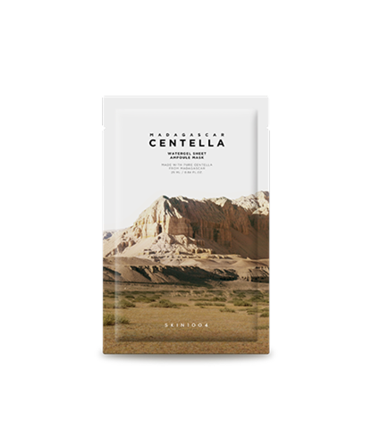
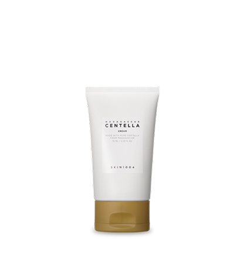
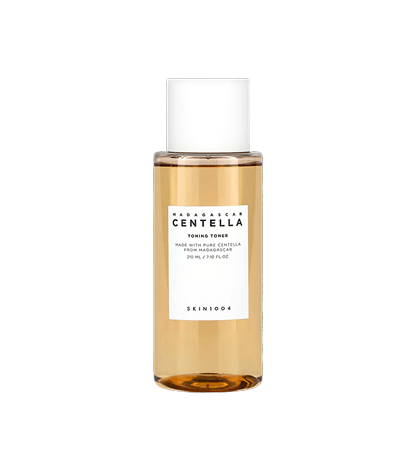
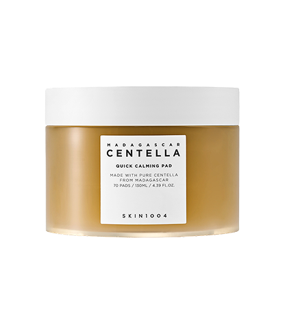

순도 높은 센텔라 정수로
피부 본연의 건강한 균형을 맞추는
마다가스카르 센텔라 앰플
용량 : 55ml

제품특징
본 제품은 스킨1004만의 엄선된 고순도 마다가스카르산 병풀추출물을 핵심성분으로 사용합니다. 해당 성분은 민감해진 피부를 즉각적으로 편안하게 진정시키는 효과를 제공합니다.
사용법
스포이드를 이용하여 앰플 적당량을 덜어냅니다. 얼굴 전체에 부드럽게 펴 발라 흡수시켜 줍니다. 더욱 깊은 진정감을 원하신다면, 2~3회 레이어링하여 사용하시기 바랍니다.
마다가스카르 센텔라 앰플 폼
용량 : 125ml

제품특징
피지 및 노폐물 제거 기능과 더불어, 시그니처 앰플 함유를 통해 피부 진정 효과를 제공하는 약산성 포뮬라 클렌징 폼입니다.
사용법
손에 적당량을 취하여 충분히 거품을 낸 후, 얼굴 전체에 부드럽게 마사지하듯 클렌징합니다. 미온수로 꼼꼼하게 헹구어 내어 잔여물이 남지 않도록 합니다.
마다가스카르 센텔라 워터겔 시트
용량 : 25ml

제품특징
본 제품은 특수 겔 시트 제형으로, 시트 원단 전체에 앰플 유효 성분을 균일하게 함유하여 피부에 촉촉함과 진정 효과를 즉각적으로 전달합니다. 앰플의 증발을 최소화하여 유효 성분의 흡수율을 높였습니다.
사용법
클렌징 후 토너 등을 이용하여 피부결을 정돈한 뒤, 얼굴 전체에 고르게 부착합니다. 약 10~20분 후 마스크를 떼어내고, 피부에 남아있는 앰플은 손으로 가볍게 두드려 흡수해 줍니다.
마다가스카르 센텔라 크림
용량 : 75ml

제품특징
피부의 수분 증발을 억제하는 보습 코팅 매트릭스를 형성하여, 피부에 지속적인 수분 공급과 함께 매끄러운 감촉을 선사합니다.
사용법
본 제품을 적당량 취하여 피부 전체에 고르게 도포한 후, 손끝으로 가볍게 두드려 흡수시켜 줍니다. 필요에 따라 여러 번 덧발라 줍니다.
마다가스카르 센텔라 토닝 토너
용량 : 210ml

제품특징
세안 후, 피부에 처음으로 사용하는 제품으로서, 병풀추출물을 함유하여 즉각적인 진정 효과와 더불어 각질 제거를 통해 매끄러운 피부결을 선사합니다.
사용법
세안 후, 스킨 또는 토너 사용 단계에서 화장솜에 적당량을 덜어 피부 안쪽에서 바깥쪽으로 부드럽게 닦아내어 피부결을 정돈해 줍니다.
마다가스카르 센텔라 퀵 카밍 패드
용량 : 130ml

제품특징
피부 진정에 필수적인 10가지 성분으로만 처방된 순한 카밍 패드가 외부 자극으로 인해 민감해진 피부를 빠르게 완화시켜 줍니다.